Section3.6Roberval, Conic Sections, and the Dynamic Approach
Subsection3.6.1Speed, Velocity, and Rates of Change
Descartes and Fermat were co-creators of Analytic Geometry — the use of Algebra to solve geometric problems — so their methods are simultaneously algebraic and geometric in nature. That is, their methods are static. There is no motion involved. But at it’s heart, Calculus gives us a way of dealing with the properties of objects as they change. It is the mathematics of motion. So we will need to think more dynamically.
If quantity \(A\) changes by \(\Delta A\) each time quantity \(B\) changes by \(\Delta B\) we say that the rate of change of \(A\) with respect to \(B\) is \(\frac{\Delta A}{\Delta B}\text{.}\)
For example, in a video game if your character gains one hundred hit points whenever you cast a certain spell we would say that the rate of change of your hit points is one hundred points per spell, denoted \(100 \frac{\text{points}}{\text{spell}}\text{.}\) If you gain fifty hit points every second time you quaff a potion we write \(\frac{50\ \text{points}}{2\ \text{quaffs}}\) or, equivalently, \(25 \frac{\text{points}}{\text{quaff}}\) and we say that the rate of change of hit points with respect to quaffs is twenty-five. Notice how naturally the properties of fractions come into play: \(\frac{50\ \text{points}}{2\ \text{quaffs}} = 25
\frac{\text{points}}{\text{quaff}}\text{.}\)
On the other hand if you lose \(15\) hit points each time an enemy strikes you three times with a sword then your hit points are decreasing at a rate of \(\frac{15\ \text{points}}{3\ \text{strikes}} = 5
\frac{\text{points}}{\text{strike}}\text{.}\) It is inconvenient to specify whether \(A\) is increasing or decreasing verbally so we adopt the convention that a negative rate of change is decreasing and a positive rate of change is increasing.
Speed is the rate of change we are most familiar with in daily life. If you are driving on a flat, straight, road your speed is the rate of change of your position, \(\Delta x\text{,}\) with respect to the passage (change) of time, \(\Delta t\text{.}\) If your speedometer reads \(60\) we say your speed is sixty miles per hour: \(60 \frac{\text{miles}}{\text{hour}}\text{,}\) meaning of course that in one hour you will travel sixty miles. This is often abbreviated to \(60\) mph. We will model a flat, straight, road as the \(x\)-axis with the positive direction to the right, as is customary. Of course, on this flat, straight, road we could be going \(60 \frac{\text{miles}}{\text{hour}}\) to the right or to the left. Since there are only two directions possible, we can again use negative numbers to indicate the direction of travel as depicted in the sketch below.
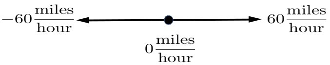
However if we are on a broad flat plain, as depicted in the sketch below we can travel in any direction whatsoever.
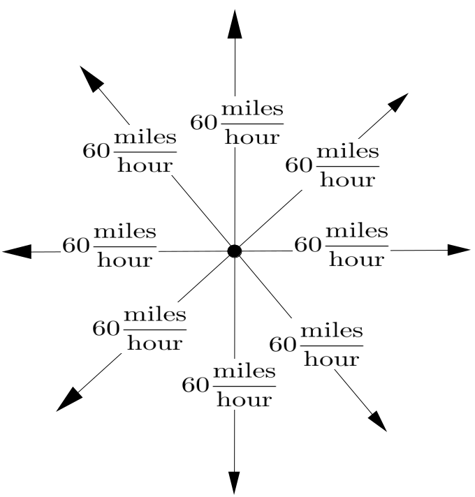
Figure3.6.1.
Notice that our sketch in Figure 3.6.1 indicates that there are eight cars, all traveling at \(60 \frac{\text{miles}}{\text{hour}}\text{,}\) but in different directions. That is, the speed of each car is \(60 \frac{\text{miles}}{\text{hour}}\text{.}\) But it should be clear that a single number is not adequate to fully describe the motion of these cars. We also need to specify the direction of travel and simply using plus or minus is no longer sufficient.
When we specify the speed and direction of motion of some object we are stating its velocity. This can be difficult at first because in casual conversation we use the words speed and velocity interchangeably, so we tend to think of them as synonyms. But in a technical setting speed and velocity, while related, have different meanings. Speed is how fast we’re going. In Figure 3.6.1 the speed of all of the cars is \(60
\frac{\text{miles}}{\text{hour}}\text{.}\) But their velocities are all different. The velocity of one car is \(60 \frac{\text{miles}}{\text{hour}}\) to the north, the velocity of another is \(60
\frac{\text{miles}}{\text{hour}}\) to the west, the velocity of a third is \(60 \frac{\text{miles}}{\text{hour}}\) to the southeast, and so on.
(1602–1675), used arrows to indicate the velocity of moving objects just as we have. The length of the arrow represents the speed of the object and the direction of travel is the direction that the arrow points. This works well in the kind of geometric arguments he used as it enabled him to develop a method for constructing tangents which is dynamic in nature.
Suppose you are on a moving sidewalk like those in an airport and the sidewalk is moving at \(3
\frac{\text{feet}}{\text{second}}\text{.}\) If you stand still on the sidewalk then you are still moving at \(3
\frac{\text{feet}}{\text{second}}\text{.}\)
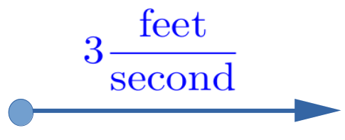
If you are walking along the sidewalk at \(4
\frac{\text{feet}}{\text{second}}\) and in the same direction the sidewalk is moving then it is pretty clear that you are moving at a rate of \(7
\frac{\text{feet}}{\text{second}}\text{.}\)
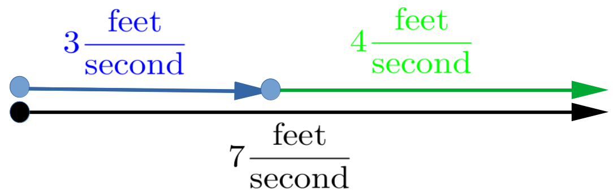
Of course, if you turn around and walk against the sidewalk, then your speed would be \(1 \frac{\text{foot}}{\text{second}}\text{.}\)
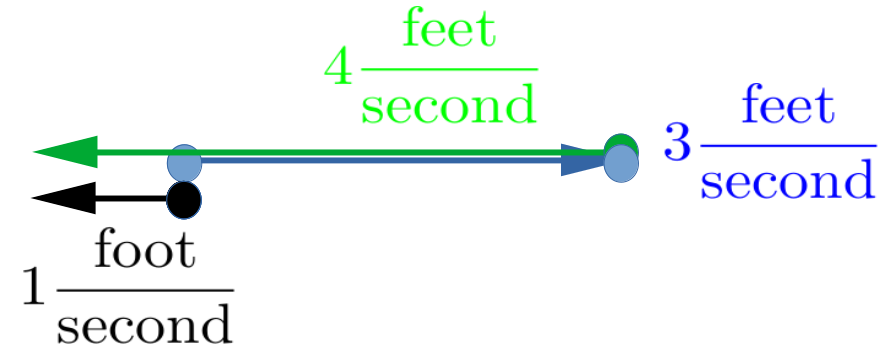
If you are walking against the sidewalk but slower than the sidewalk is moving, say at \(2 \frac{\text{feet}}{\text{second}}\text{,}\) then you are again moving at \(1 \frac{\text{foot}}{\text{second}}\) but in the other direction.
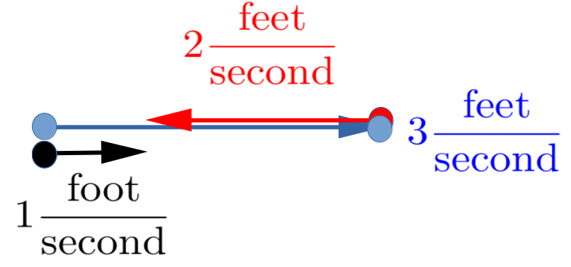
Since there are only two possible directions all this could have been done without arrows by just adding signed numbers where the sign indicates the direction: \(3+ 4=7\text{,}\)\(3+(-4)=-1\text{,}\)\(3+(-2) =1\text{,}\) but what if there are more directions available?
Using arrows allows us to bring this discussion into a more general setting. In the examples above notice that the resulting velocity (the black arrow) was always obtained by attaching the tail of the green or red arrow to the head of the blue arrow.
This works equally well if more directions are available, like when we are moving in a plane instead of on a straight line.
For example, suppose we are swimming across a river at a speed of \(2 \frac{\text{feet}}{\text{second}} \) and the river is flowing at \(3 \frac{\text{feet}}{\text{second}}\text{.}\) Assuming that we are swimming perpendicular to the current, we have the situation depicted in Problem 3.6.2 below.
Problem3.6.2.
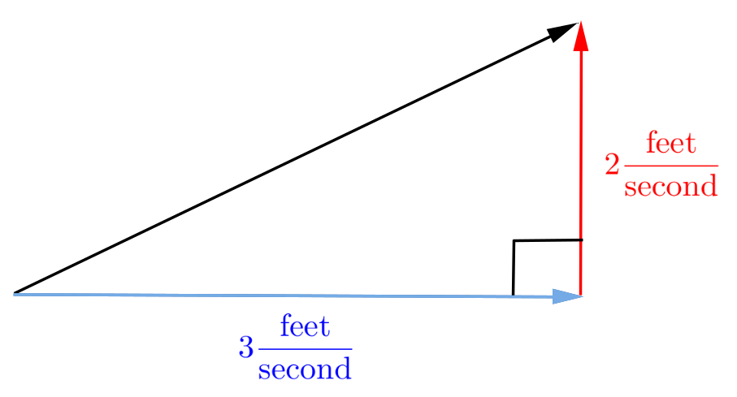
(a)
In the diagram above what does the length of the black arrow represent physically?
(b)
What is the length of the black arrow?
In general you can think of the velocity of an object moving in a plane as being compounded of a horizontal velocity (the blue arrow in Problem 3.6.2) and a vertical velocity (the red arrow in Problem 3.6.2). This is easiest to think about when the component velocities are perpendicular but this isn’t strictly necessary. For example, you don’t need to be swimming perpendicular to the current. As seen in Figure 3.6.3 below to find the result of two non-perpendicular velocities (the solid red and blue arrows) we need only form the parallelogram as shown. The resulting velocity is then represented by the black diagonal arrow.
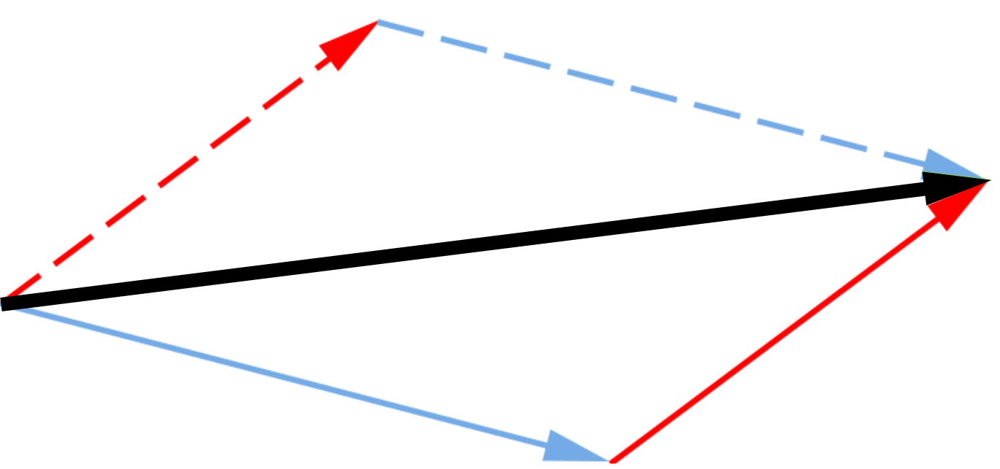
Figure3.6.3.
Roberval assumed that a curve in the plane is generated by a point whose motion is an aggregate of two known motions, which can be represented as arrows. The arrows are then “added” by finding the diagonal of the parallelogram generated by them. This diagonal will point in the direction of motion at that point on the curve. And it will point tangent to the curve.
Example3.6.4.
Suppose a point is moving in the plane so that its horizontal speed is \(1\) unit per second and its vertical velocity is \(2\) units per second as in the diagram below.
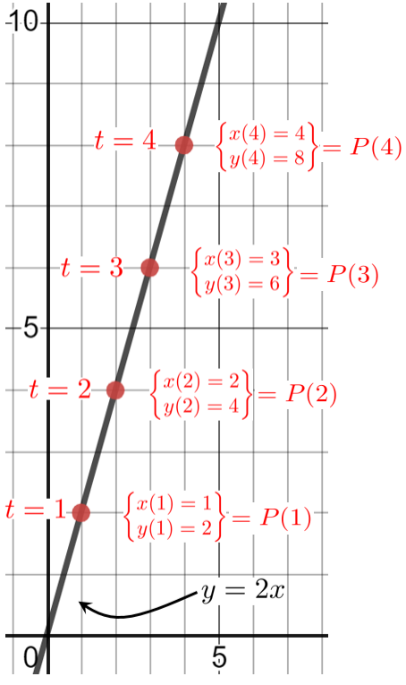
Clearly our point is moving along the line \(y=2x\text{.}\) If \(t\) represents time in seconds and if the point starts at the origin, then its coordinates are given by \(x(t)=t\) and \(y(t)=2t\text{.}\) Since both \(x\) and \(y\) are needed to locate the point we will join them together notationally like this:
You might quite reasonably ask why we’ve gone to all this bother just to have two different ways to represent a particular line: \(y=2x\text{,}\) and \(P(t)=\ParamEqTwo{t}{2t}\) The difference is in how we “think about” the graph. When we write \(y=2x\) we are thinking of the entire graph. When we write \(P(t)=
\ParamEqTwo{x(t)}{y(t)} \) there is an implicit understanding that (\(t\))ime is passing and we are thinking about the motion of the point. Thus when \(t=1\) the point is at \((1,2)\) when \(t=2\) it’s at \((2,4)\text{.}\)
Think of the line as a road. The formula \(y=2x\) describes the entire road, whereas the expression \(P(t)=
\ParamEqTwo{x(t)}{y(t)} = \ParamEqTwo{t}{2t} \) tells us the point’s location on the road at any given time, \(t\text{.}\)
The idea of representing velocities with arrows is quite a powerful and common technique for representing non-linear motion. Roberval used this technique to find the tangent lines of the conic sections (as we will soon see) as well as more general curves. Since Roberval’s time this idea has been developed considerably beyond what Roberval did. In fact we are skirting the edge of some very deep ideas here. In modern terms these arrows would be called vectors. Using this terminology Vector Addition is then done by the Parallelogram Rule, which is essentially what we did in Figure 3.6.3: Form the parallelogram and find its diagonal. The full force of vector analysis was not available to Roberval, and we won’t need it either so we will not take you any further down this path but we encourage you visualize velocities, and any other directed quantity, as composed of horizontal and vertical components whenever you can. You will see this representation in more detail later in your education and it will help if you have already begun thinking in these terms.
Drill3.6.5.
Suppose the position of a point in the plane is given by \(P(t)= \ParamEqTwo{3t}{6t}\text{.}\)
What is the horizontal speed of the point?
What is the vertical speed of the point?
What is the speed of the point in the direction of motion?
Compare the motion of the point in this problem to the motion of the point in Example 3.6.4.
Drill3.6.6.
Suppose a point is moving along the line \(y=mx+b\) with a horizontal speed of \(1\) unit per second.
Find a representation of the point’s position in the form \(P(t)=\ParamEqTwo{x(t)}{y(t)}\text{.}\)
There are a many correct representations. You’re task is to find one of theme and to show that it is correct.
What is the speed of the point in the vertical direction?
What is the speed of the point in the direction of motion?
Drill3.6.7.
Suppose a point is moving along the line \(y=mx+b\) with a horizontal speed of \(5\) units per second.
What is the speed of the point in the vertical direction?
What is the speed of the point in the direction of motion?
Drill3.6.8.
Suppose the position of a point in the plane is given by \(P(t)= \ParamEqTwo{2t}{5t}\text{.}\)
What is the horizontal velocity of the point?
What is the vertical velocity of the point?
What is the velocity of \(P\) in the direction of motion?
Problem3.6.9.
We drop an object from a helicopter which is traveling horizontally with a constant velocity of \(1\) meter per second. After it leaves the helicopter the vertical velocity of the object at time \(t\) will be \(-9.8t\) meters per second as in the following diagram:
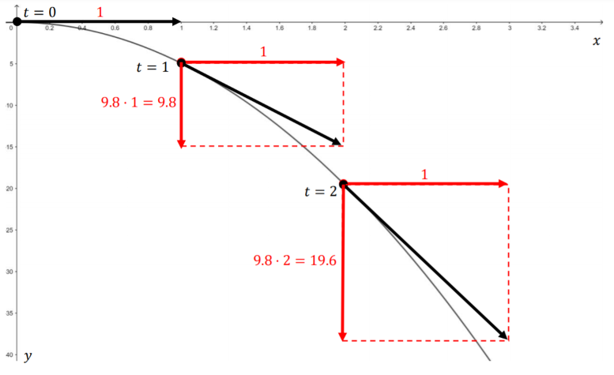
If Roberval’s method works then the speed of the point at any time, \(t\text{,}\) will be the length of the diagonal of parallelogram of velocity arrows at time \(t\text{.}\) Find a formula for the speed of the point and any time \(t\text{.}\)
Subsection3.6.2The Tangent Lines of the Conic Sections
Parabolas, ellipses, and hyperbolas are called conic sections, or just conics, because they were originally defined as the intersection of a cone with planes situated at various angles, as shown in the sketches below.
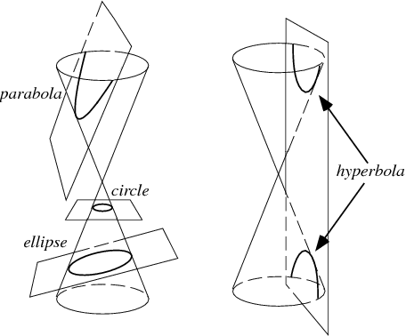
While interesting, the original geometric definitions won’t do for our purposes because they are entirely static. There is no motion involved.
To use Roberval’s dynamic approach to constructing tangent lines to the conic sections we will resort to yet a third equivalent definition. We start with the parabola.
SubsubsectionThe Tangent to a Parabola
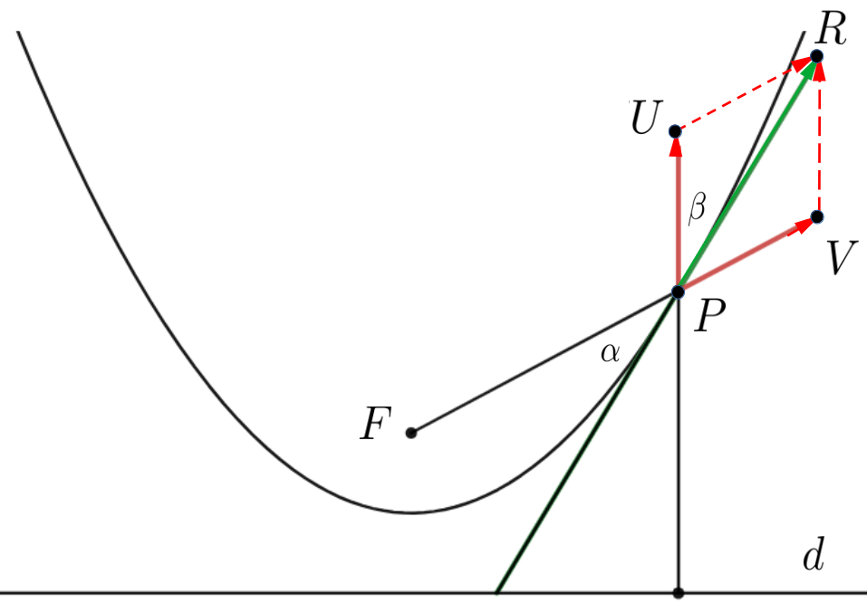
Figure3.6.10.Roberval’s view of the tangent to a parabola
As seen in Figure 3.6.10, a parabola can also be thought of as the set of points, \(P\text{,}\) in a plane which are equidistant from a fixed point, \(F\text{,}\) called the focus of the parabola, and a specific line, \(d\text{,}\) called the directrix of the parabola. Adopting Roberval’s dynamic viewpoint, we can think of \(P\) as tracing out the parabola by moving so that these distances stay equal to each other.
Problem3.6.11.
(a)
Use Figure 3.6.10 to explain why it must be that the speed at which \(P\) moves away from \(F\) must equal the speed at which \(P\) moves away from \(d\text{.}\)
Hint.
Suppose these speeds were not equal. What would this say about the distances from \(P\) to \(F\) and from \(P\) to \(d\text{?}\)
(b)
If \(PV\) represents the velocity of the motion of \(P\) away from \(F\text{,}\) and \(PU\) represents the velocity of the motion of \(P\) away from \(d\text{,}\) then according to Roberval, the diagonal, \(PR\) of the parallelogram \(PVRU\) is tangent to the parabola. Use the result of part 3.6.11.a to explain why this parallelogram is a rhombus. (A rhombus is a parallelogram where the four sides have equal length.)
(c)
In Figure 3.6.10 the angle \(\beta\) is between the arrows \(PU\) and \(PR\text{.}\) We have also extended the arrow \(PR\) downward to form the angle \(\alpha\) with \(FP\text{.}\) Given that the parallelogram \(PVRU\) in the previous figure is a rhombus, show that the two angles, \(\alpha,\)\(\beta\) are congruent.
That \(\alpha\) and \(\beta\) are congruent in Problem 3.6.11 has an interesting consequence in optics. Imagine that the inside of our parabola is a mirror, and that a light source has been placed at the point \(F\text{.}\) As we have seen when light reflects off of a flat mirror the angle of incidence is equal to the angle of reflection. Since this mirror isn’t flat the angles of incidence and reflection are measured from the line tangent to the parabola at the point where the light strikes the mirror. Thus the angle of incidence of a beam emerging from \(F\) and striking the parabola at \(P\) will be \(\alpha\) in our diagram and the angle of reflection will be \(\beta (=\alpha)\text{.}\) It follows that a light beam emerging from \(F\) and reflecting from the parabola at any point will follow a path parallel to the axis of symmetry of the parabola after reflecting from the interior of the parabola.
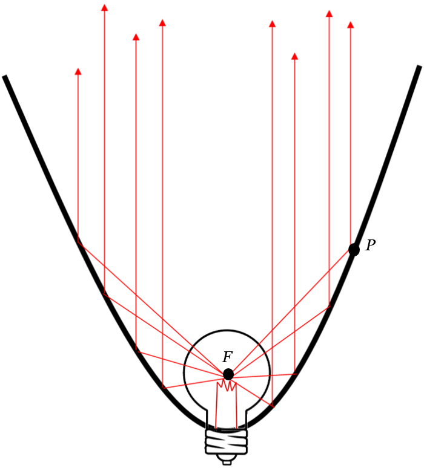
You can see this in action with your car headlights or a flashlight. The reflector is cast in the shape of a parabola and the light emitting filament is placed at the focus, so all of the light which strikes the reflector gets reflected in that direction.
Now turn this around. Any light beam coming parallel to axis of symmetry and striking the parabolic mirror will pass through the focal point \(F\text{.}\) The light is thus focused and the image appears larger. This fact was used by Isaac Newton in the seventeenth century to design a new, and better, telescope than the one used by Galileo a generation earlier. Galileo’s telescope was based on the refraction of light as it passes through shaped lenses. Through his study of optics Newton learned that the magnification effect could also be achieved via reflection. It was his invention of the reflecting telescope that first brought Newton into scientific prominence.
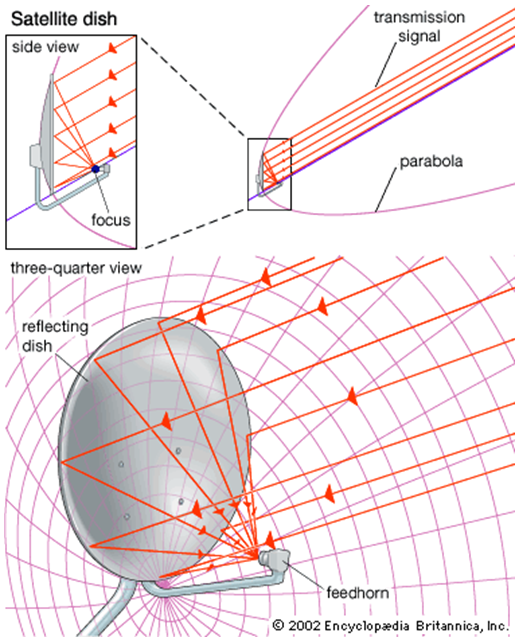
Newton used the reflective property of parabolas to design his telescope and it is still the fundamental optical principle that is used today to design all reflective telescopes, large and small.
In fact, you use this every day. Since radio waves are a form of electromagnetic radiation, just like visible light, this is also a fundamental design point for both radar antennas, satellite cable TV dishes, and the antennas at the tops of cell phone towers.
SubsubsectionThe Tangent to an Ellipse
Geometrically, an ellipse is the set of points in a plane, where the sum of the distances from two fixed points (foci) is a constant. Following Roberval we can generate an ellipse by combining two motions: one away from one focus (\(F_1P\)) and one toward the other focus (\(PF_2\)) as in the sketch below.
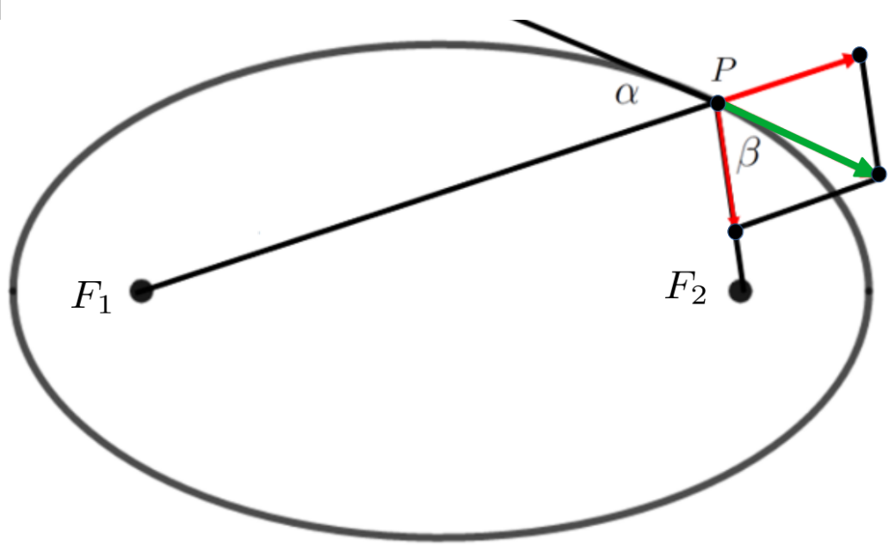
If we set \(d_1\) equal to the length of \(F_1P\) and \(d_2\) equal to the length of \(PF_2\text{,}\) then \(d_1+d_2\) is constant.
Because \(d_1+d_2\) is constant it should be clear that the rate at which \(d_1\) lengthens is related to the rate at which \(d_2\) shortens. These rates of change are represented by the red arrows in our sketch.
Problem3.6.12.
Explain why the parallelogram in the sketch above must be a rhombus and use this to show that angle \(\alpha\) is congruent to angle \(\beta\text{.}\)
Hint.
An argument very similar to the one used in Problem 3.6.11 will work.
From Problem 3.6.12 we see that any light ray, sound wave, etc., emanating from one focus of an ellipse will reflect off of the interior of the ellipse to the other focus.
A playful example of the reflective properties of an ellipse are the so–called “whisper galleries.” If you and a friend stand at the foci of a room in the shape of an ellipse you will be able to converse in whispers even if you are very far apart. This is because the sound waves from your friend’s voice will spread out to the walls and then reflect back to the other focus, where you are standing. Naturally, the volume of sound from any single location in the interior of the ellipse will have dropped considerably in transit. However, since all of them travel the same distance to get to you they arrive at the same time and the volume you hear is the sum of all of the individual reflected volumes.
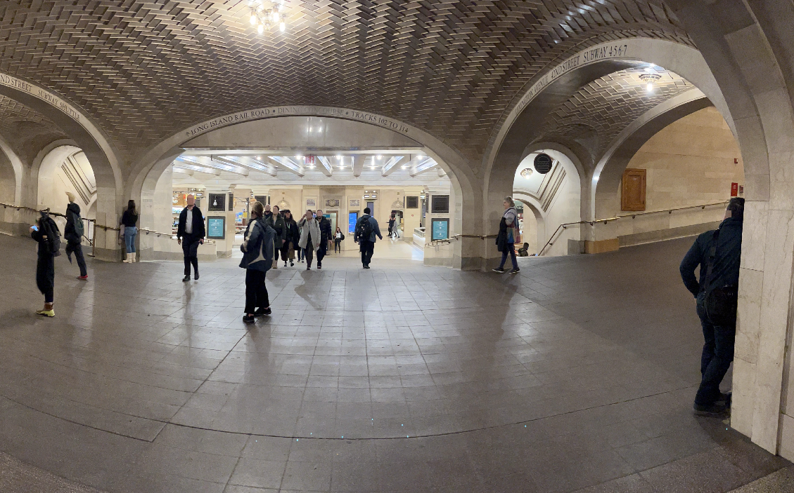
The whisper gallery shown above is next to the Oyster Bar in Grand Central Station, New York City. The young woman standing at the support column in the background on the left and the young man at the column at the right in the foreground are standing at the foci of the elliptical ceiling. Each can hear the other clearly even if they speak quietly, but no one else in the corridor can hear them..
There is another whisper gallery in Statuary Hall in the Capitol building in Washington DC. This room was originally the meeting hall for the House of Representatives. It is said that when John Quincy Adams was a representative he would eavesdrop on his political enemies by placing himself at one focus of the room whenever he saw them talking quietly at the other.
A more serious application of the reflective properties of the ellipse is used in modern medicine to treat kidney stones. The treatment is called Extra–corporeal Shock Wave Lithotripsy, and it works by generating shock waves at one focus of a reflecting ellipse. The reflective property of the ellipse then concentrate the waves at the other focus. Placing the stone, which is inside the patient’s body, at the second focus allows the shock waves to pummel the stone into dust.
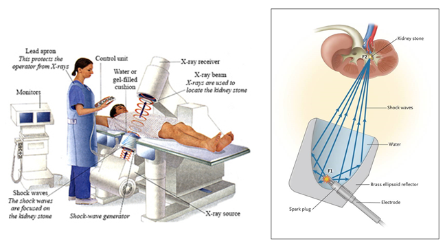
SubsubsectionThe Tangent to an Hyperbola
If an ellipse is the locus of points the sum of whose distances from two given points is constant it is natural to ask, “What do we get when the difference of their distances is constant?” That is the shape called the hyperbola seen in the diagram below.
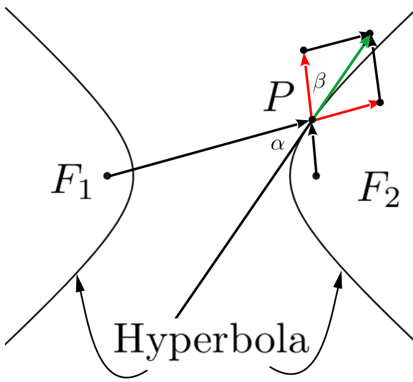
If, as before, we set \(d_1\) and \(d_2\) equal to the lengths of \(F_1P\) and \(F_2P\text{,}\) respectively, then an hyperbola has the property that \(d_1-d_2\) is constant.
Problem3.6.13.
Explain why the parallelogram in the sketch above must be a rhombus and use this to show that angle \(\alpha\) is congruent to angle \(\beta\text{.}\) As before in our diagram the red arrows represent the velocity of \(P\) in the direction from \(F_1\) to \(P\) and from \(F_2\) to \(P\text{.}\)
The hyperbola also has interesting reflective properties. If a beam of light is aimed at one focus it will reflect off of the hyperbola toward the other focus. This property can be used to further refine the design of reflecting telescopes and antennae. The figure below shows the design of Cassegrain antenna.
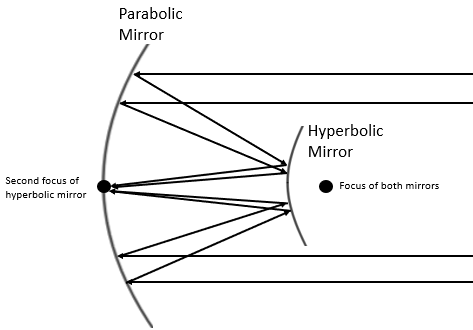
The large, primary mirror on the left is parabolic and shares a focus with the smaller, secondary, hyperbolic mirror on the right. Light reflecting off of the primary mirror is directed at the shared focus on the right where it is reflected to the other focus at the primary mirror. A detection device is then placed at the secondary focus to collect the amplified signal.
Roberval’s use of arrows to represent velocities provides an intuitive way to understand the reflective properties of the conic sections. Moreover, thinking of curves as being traced out in time it gives us a dynamical way of looking at curves. This was a viewpoint that Newton adopted in his version of the Calculus.